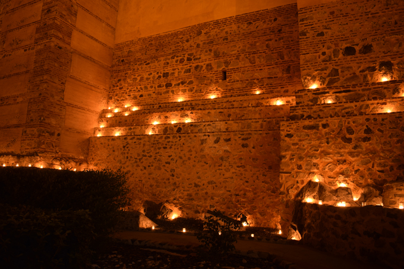

|
Este evento permite a vecinos y visitantes un recorrido completo desde la fortaleza medieval, a través de los jardines que rodean sus lienzos, pasando por la Iglesia de la Asunción del siglo XV, las calles aledañas y la Casa Palacio Conde del Álamo del siglo XVIII, hoy rehabilitada como hotelmanteniendo estructuras originales, hasta el interior del castillo, por la conocida como la Puerta de la Reina. Un acceso original cuyo nombre hace referencia a una trágica leyenda, la de la reina Saluquia y su amado Bráfama, compartida con el pueblo portugués de Moura.
La noche se complementa con pequeñas recreaciones históricas que nos muestran la historia del castillo a través de personajes como Alfonso Péres Farinha, Prior de la Orden del Hospital de San Juan, artífice de la conquista en 1250 de este castillo.
|
|  |